本文的策略思路来自这篇头条文章， 但所有数据均使用 yfinance 重新下载、所有结果均为本项目独立计算。 本次回测用纳斯达克的当日涨跌幅作为加码信号、买入标的为 纳斯达克100(QQQ)（QQQ），把 3/5/10/20年 几个回测周期跑了一遍—— 不靠任何主观择时，只比较两种「每天都买」的日定投方式，看看 跌多就加码到底有没有用，得出的是一份完整、可复现的回测报告。
^IXIC
（纳斯达克）的日涨跌幅，但实际买入的是 QQQ（纳斯达克100(QQQ)）。
本报告使用 yfinance 的真实历史数据，以 纳斯达克 的日涨跌幅为加码信号、买入标的为 QQQ（纳斯达克100(QQQ)），回测了 3年、5年、10年、20年 共 4 个周期，截止日为 2026-06-18。对比「动态跌幅加码定投」与「每日固定100定投」两种策略。
不管纳斯达克100(QQQ)涨还是跌，每个交易日雷打不动投入 100 元， 以当日（复权）收盘价买入 纳斯达克100(QQQ)，允许小数股，持有到期末不卖出。这是最简单、最机械的定投方式。
完全根据 纳斯达克 当日的同日收盘涨跌幅调整当天投入金额（买入标的为 纳斯达克100(QQQ)）： 跌得越多、买得越多；涨得越多、买得越少。
| 当日涨跌幅 | 当日投入（元） |
|---|---|
| 跌幅超过 2% | 300 |
| 跌幅 1%–2% | 200 |
| 涨跌幅 -1% 到 +1% | 100 |
| 涨幅 1%–2% | 50 |
| 涨幅超过 2% | 20 |
| 投资 周期 | 动态定投 总收益率 | 固定100定投 总收益率 |
动态策略 超额收益率 | 动态策略 多赚金额 |
动态策略 总投入 | 固定定投 总投入 |
动态策略 最终金额 | 固定定投 最终金额 |
|---|---|---|---|---|---|---|---|---|
| 3年 | 54.28% | 53.45% | +0.83% | 4,583 | 82,590 | 75,300 | 127,420 | 115,547 |
| 5年 | 88.64% | 85.75% | +2.88% | 18,732 | 142,650 | 125,600 | 269,089 | 233,307 |
| 10年 | 213.04% | 215.73% | -2.69% | 50,342 | 278,210 | 251,400 | 870,909 | 793,757 |
| 20年 | 833.31% | 814.77% | +18.54% | 571,789 | 560,620 | 503,200 | 5,232,315 | 4,603,106 |
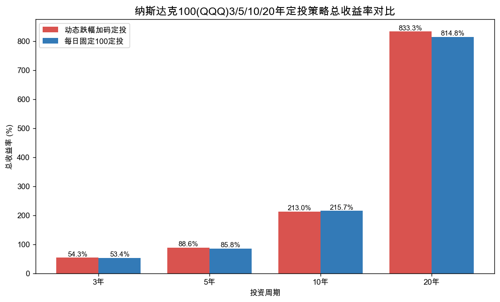
按收益率看，动态跌幅加码策略在 20 年周期的超额收益率最高，为 +18.54%；在 10 年周期表现相对最弱，超额收益率为 -2.69%。可见不同周期下收益率差异有所不同，需结合绝对收益一起判断。
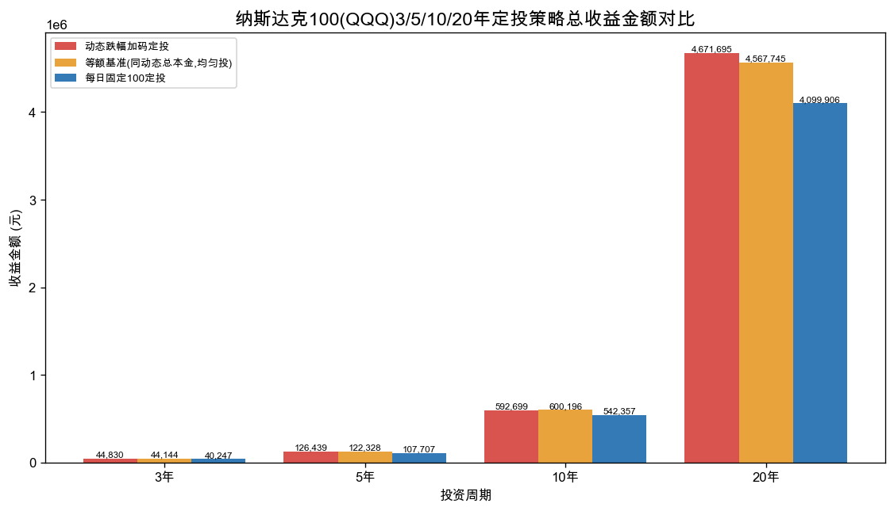
按绝对收益金额看，差距比收益率明显得多。以 20 年周期为例，动态策略最终金额约 5,232,315 元，固定策略约 4,603,106 元，动态策略多赚约 571,789 元。但要注意：动态策略同期总投入约 560,620 元，比固定策略多投入约 57,420 元。也就是说，两种策略投入的本金并不相等，直接比最终金额并不公平——下一节用「等额基准」把这笔多赚的钱拆开来看。
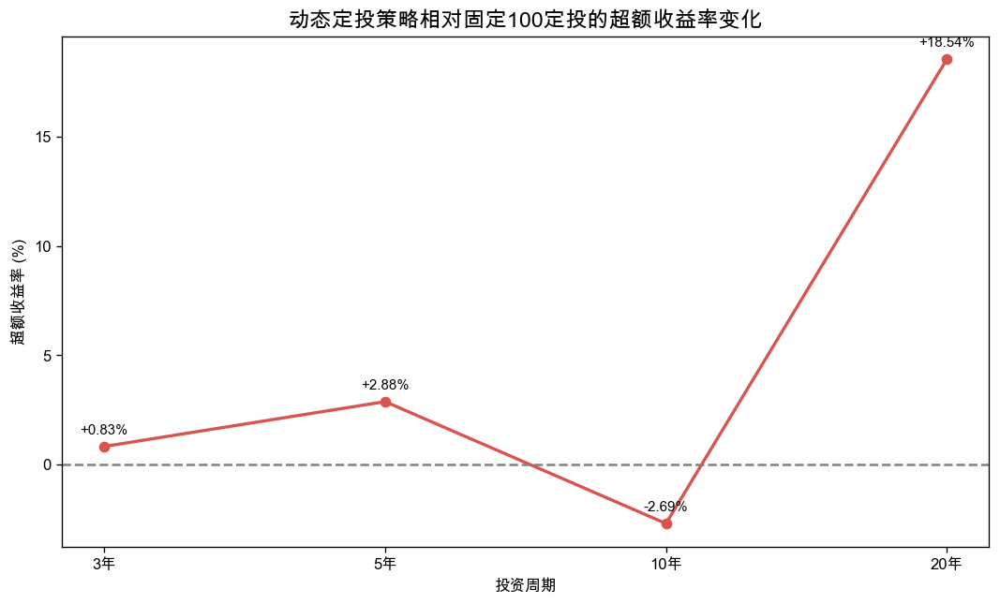
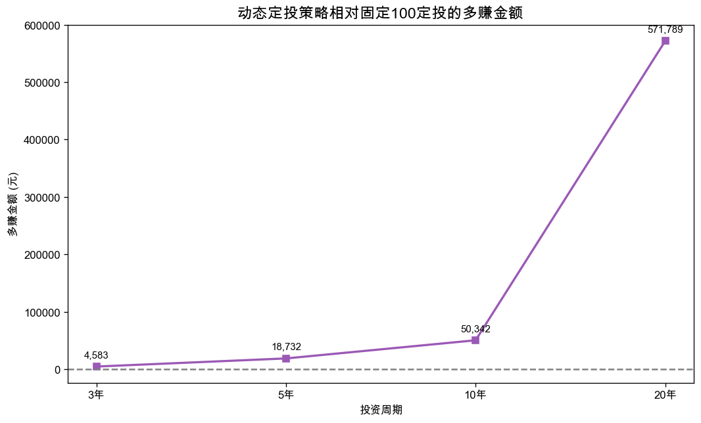
为了把「择时」和「多投入的本金」分开，我们引入第三个对照组——等额基准：它投入与动态策略完全相同的总本金，但像固定定投一样每天均匀投入。这样一来，等额基准与动态策略的本金一模一样，二者的差异就只剩「什么时候把钱投进去」，即纯粹的择时能力。
以 20 年为例，动态策略相对固定100定投共多赚约 571,789 元，可拆为两部分：
① 择时 alpha（动态 − 等额基准，本金相同）：约 103,950 元，占 18%；
② 多投入本金的贡献（等额基准 − 固定100，本金更多）：约 467,839 元，占 82%。
可见所谓「多赚」中，真正归功于跌幅加码择时的部分往往只是小头，大头其实来自单纯投入了更多钱。这也提醒我们：评价一个加码策略，应该用「本金相同」的口径比较，而不是直接比最终金额。
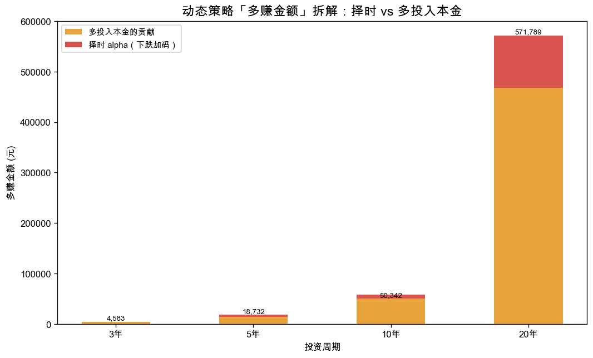
| 周期 | 多赚总额 | 择时 alpha | 占比 | 多投本金贡献 | 占比 |
|---|---|---|---|---|---|
| 3年 | 4,583 | 687 | 15% | 3,896 | 85% |
| 5年 | 18,732 | 4,111 | 22% | 14,621 | 78% |
| 10年 | 50,342 | -7,497 | -15% | 57,839 | 115% |
| 20年 | 571,789 | 103,950 | 18% | 467,839 | 82% |
买入持有（B&H）：在回测首个交易日，用与「固定100定投」相同的总金额一次性买入 纳斯达克100(QQQ) 并持有到期末。它与分批定投最大的区别是：资金在第一天就全部到位、全程在场（full time in market），而定投是逐日把钱投进去的。
以最长 20 年周期为例，B&H 最终金额约 11,448,259 元，固定定投约 4,603,106 元，二者相差约 6,845,153 元。在长期上涨的行情里，B&H 在多数周期里都跑赢了分批定投——因为它的钱在场时间更长。但这并不意味着 B&H 一定更优：① 它要求你第一天就有全部本金（定投的优势恰恰是用现金流逐步投入）；② 一次性买在高点会立刻承受全部回撤，定投则把成本摊平、心理压力更小。因此 B&H 与定投并非「谁绝对更好」，而是适用场景不同：有整笔闲钱、能扛回撤 → 倾向 B&H；靠工资逐月投入、想摊平成本 → 倾向定投。
| 周期 | B&H 总收益率 | 固定定投 总收益率 | 动态定投 总收益率 |
B&H 最终金额 | 固定定投 最终金额 | 动态定投 最终金额 |
B&H − 固定 最终差额 | B&H 最大回撤 |
|---|---|---|---|---|---|---|---|---|
| 3年 | 105.16% | 53.45% | 54.28% | 154,484 | 115,547 | 127,420 | 38,937 | -22.77% |
| 5年 | 122.74% | 85.75% | 88.64% | 279,766 | 233,307 | 269,089 | 46,459 | -35.12% |
| 10年 | 639.84% | 215.73% | 213.04% | 1,859,969 | 793,757 | 870,909 | 1,066,212 | -35.12% |
| 20年 | 2175.09% | 814.77% | 833.31% | 11,448,259 | 4,603,106 | 5,232,315 | 6,845,153 | -53.40% |
注：B&H 投入的总金额与「固定100定投」相同，但在首日一次性买入； 其总收益率即该周期的价格涨幅，与投入金额无关。净值曲线见下一节（绿色虚线）。
20年周期里，动态策略多赚约 57.2万 元，时间越长、纳斯达克100(QQQ)这种长期向上的标的，加码累积的低位筹码效果越明显。
动态策略的总收益率与固定定投往往只差几个百分点，甚至个别周期还略低（如 10年 -2.69%）。真正拉开差距的是它在下跌时投入了更多本金，做大了总盘子。
用「等额基准」（投入与动态完全相同的总本金、但每天均匀投）拆解后发现：20年里动态策略多赚的钱中，只有约 18% 来自下跌加码带来的更低成本（真正的择时 alpha），其余约 82% 仅仅是因为它投入了更多本金。别把多投入的钱误当成择时能力。
再精巧的加码规则，也比不上长期不中断的纪律。对普通人来说，坚持定投穿越熊市，远比策略细节更决定最终结果。
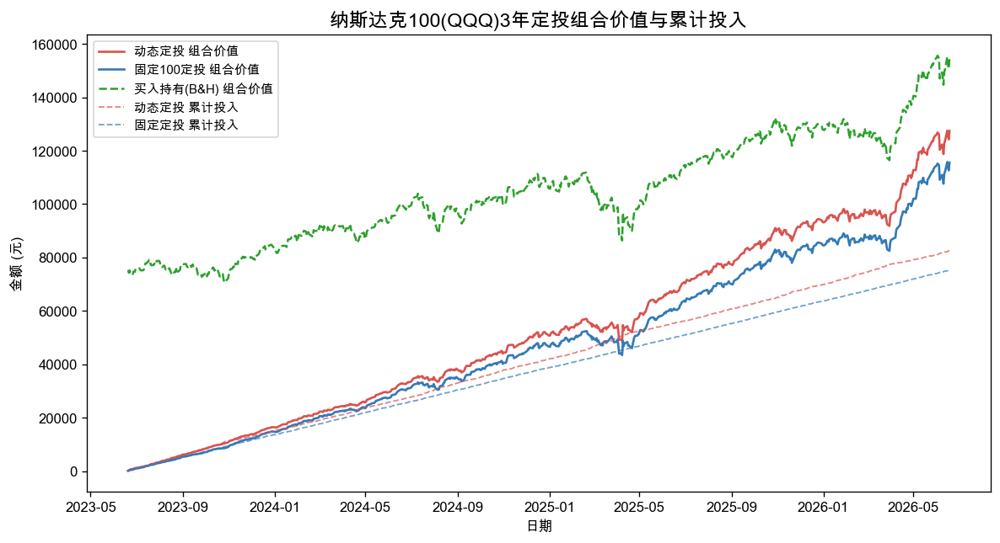
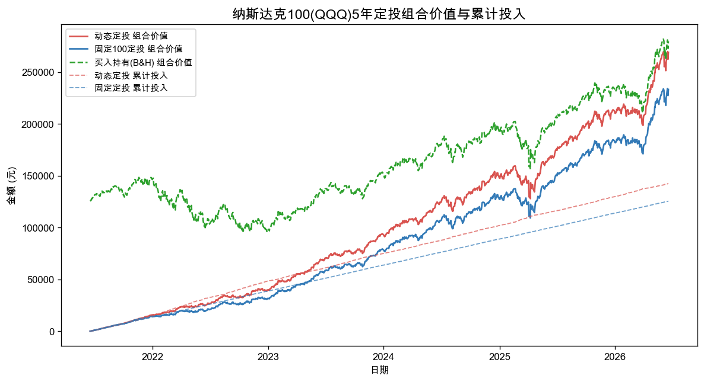
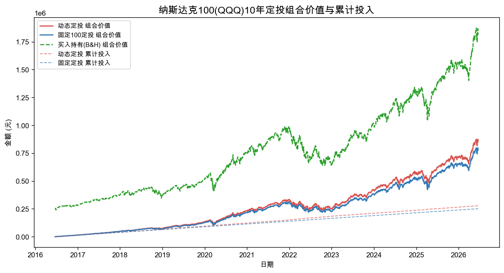
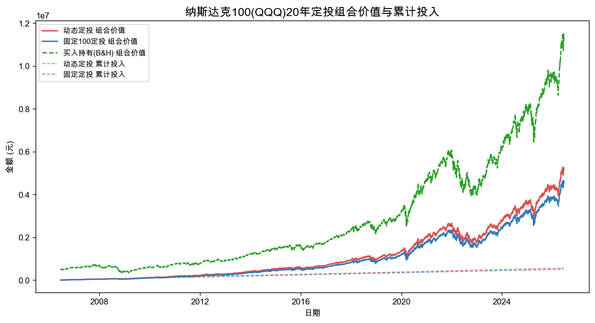
从净值曲线可以看出，动态策略的「组合价值」与「累计投入」两条线，都会因为在下跌期加大投入而高于固定策略。两条净值曲线的形状高度相似，说明动态策略主要影响的是投入节奏与规模，而非彻底改变收益结构。图中绿色虚线为「买入持有(B&H)」的组合价值，便于直观对比一次性投入与分批投入。
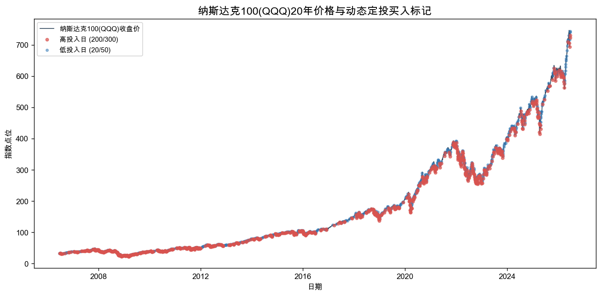
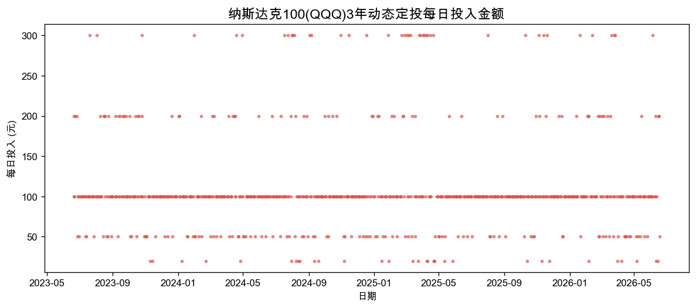
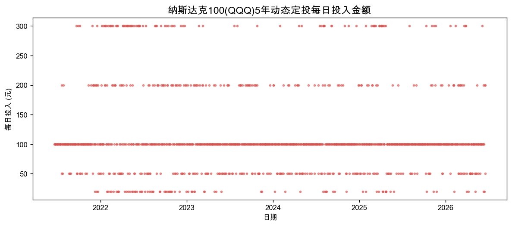
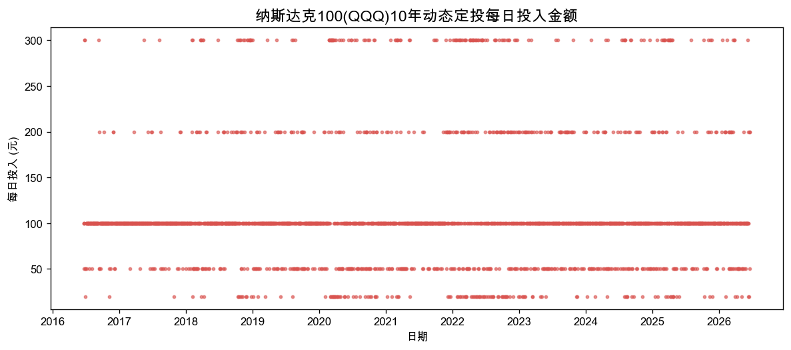
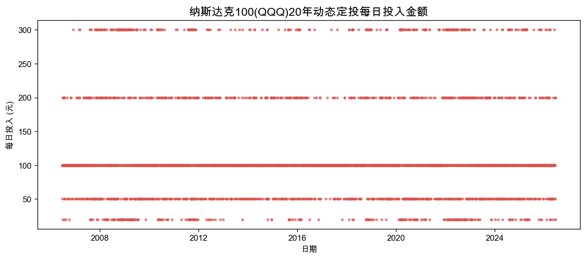
在 20 年周期里，动态策略触发「跌幅超2%、投300」的天数约 318 天，触发「涨幅超2%、投20」的天数约 266 天。大跌日相对少见，但正是这些日子贡献了更低的买入成本；由于大涨与大跌日都属少数，绝大多数交易日仍按 100 投入，因此动态策略确实抬高了总投入规模，但幅度有限。
| 周期 | 投300天数 | 投200天数 | 投100天数 | 投50天数 | 投20天数 |
|---|---|---|---|---|---|
| 3年 | 41 | 73 | 494 | 113 | 32 |
| 5年 | 94 | 142 | 752 | 183 | 85 |
| 10年 | 163 | 225 | 1643 | 345 | 138 |
| 20年 | 318 | 480 | 3310 | 658 | 266 |
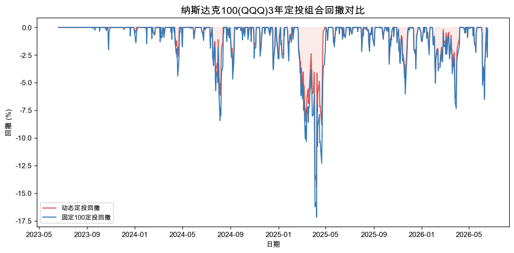
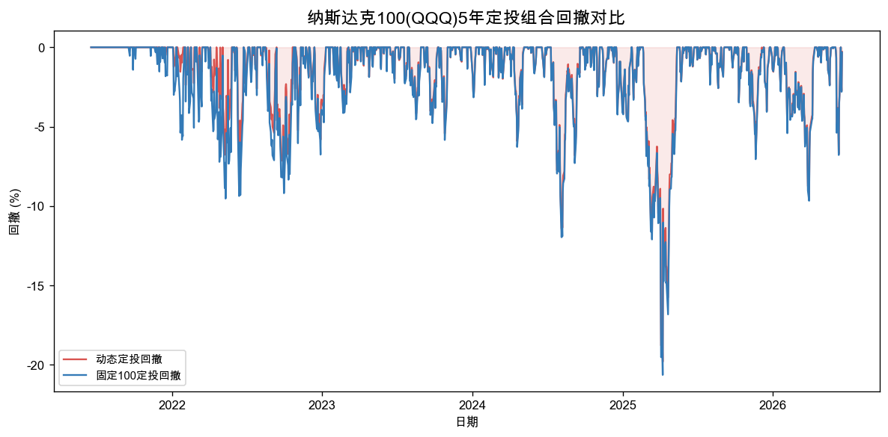
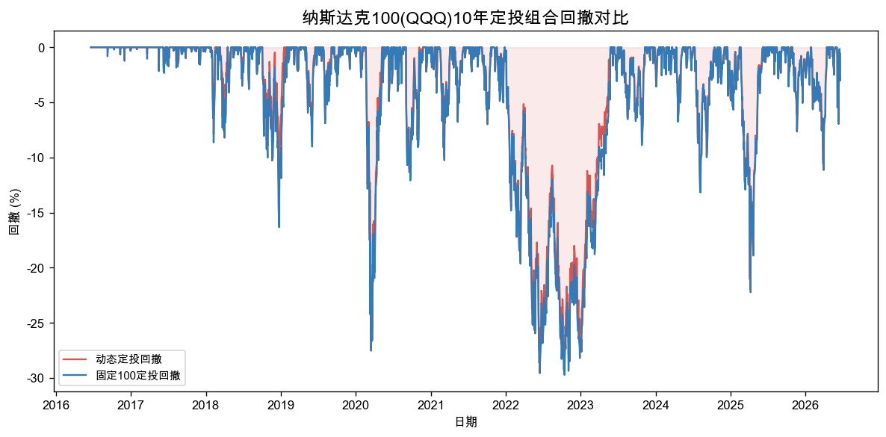
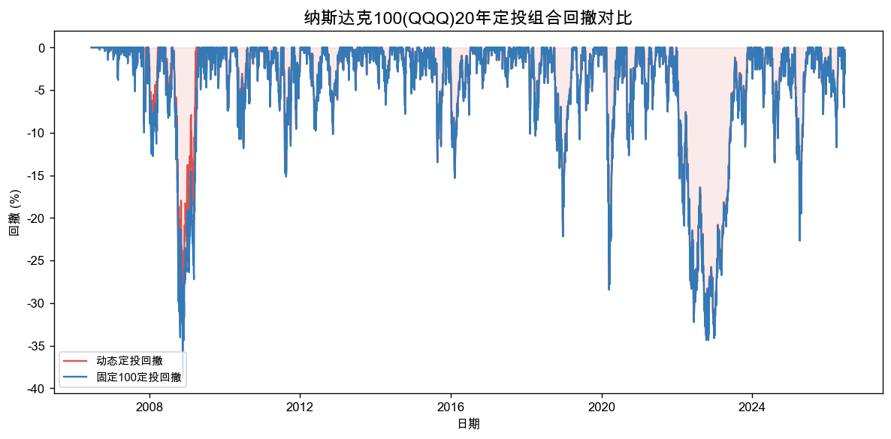
从回撤曲线看，两种策略以组合价值计的回撤路径非常接近——因为它们持有的是同一标的。动态策略在熊市中持续加大投入，短期账面回撤未必更小，但更低的平均成本有助于在反弹时更快回本。
说明：「等额(同动态)」即等额基准——投入与动态策略相同的总本金、但每天均匀投入； 它的总收益率与「固定100」相同（仅本金规模不同），用于隔离纯择时效果。 「买入持有(B&H)」为首日一次性投入相同总额并持有。
| 周期 | 策略 | 最终金额 | 总收益率 | 年化 (XIRR) |
最大回撤 | 年化 波动率 | 夏普 | 累计份额 | 平均成本 |
|---|---|---|---|---|---|---|---|---|---|
| 3年 | 动态 | 127,420 | 54.28% | 31.10% | -14.45% | 20.10% | 1.30 | 172.05 | 480.05 |
| 3年 | 固定100 | 115,547 | 53.45% | 30.68% | -17.16% | 20.10% | 1.30 | 156.01 | 482.65 |
| 3年 | 等额(同动态) | 126,734 | 53.45% | 30.68% | -17.16% | 20.10% | 1.30 | 171.12 | 482.65 |
| 3年 | 买入持有(B&H) | 154,484 | 105.16% | 27.09% | -22.77% | 20.10% | 1.30 | 208.59 | 361.00 |
| 5年 | 动态 | 269,089 | 88.64% | 25.49% | -19.80% | 22.63% | 0.82 | 363.33 | 392.62 |
| 5年 | 固定100 | 233,307 | 85.75% | 25.39% | -20.63% | 22.63% | 0.82 | 315.02 | 398.71 |
| 5年 | 等额(同动态) | 264,978 | 85.75% | 25.39% | -20.63% | 22.63% | 0.82 | 357.78 | 398.71 |
| 5年 | 买入持有(B&H) | 279,766 | 122.74% | 17.36% | -35.12% | 22.63% | 0.82 | 377.75 | 332.50 |
| 10年 | 动态 | 870,909 | 213.04% | 22.02% | -28.42% | 22.42% | 1.01 | 1175.92 | 236.59 |
| 10年 | 固定100 | 793,757 | 215.73% | 21.90% | -29.72% | 22.42% | 1.01 | 1071.75 | 234.57 |
| 10年 | 等额(同动态) | 878,406 | 215.73% | 21.90% | -29.72% | 22.42% | 1.01 | 1186.04 | 234.57 |
| 10年 | 买入持有(B&H) | 1,859,969 | 639.84% | 22.16% | -35.12% | 22.42% | 1.01 | 2511.37 | 100.10 |
| 20年 | 动态 | 5,232,315 | 833.31% | 19.15% | -34.20% | 22.07% | 0.82 | 7064.78 | 79.35 |
| 20年 | 固定100 | 4,603,106 | 814.77% | 19.08% | -38.63% | 22.07% | 0.82 | 6215.21 | 80.96 |
| 20年 | 等额(同动态) | 5,128,365 | 814.77% | 19.08% | -38.63% | 22.07% | 0.82 | 6924.42 | 80.96 |
| 20年 | 买入持有(B&H) | 11,448,259 | 2175.09% | 16.90% | -53.40% | 22.07% | 0.82 | 15457.67 | 32.55 |
在最长的 20 年周期里，动态跌幅加码策略的收益率比固定定投高 18.54%，最终金额多约 629,209 元。
需要明确指出：动态策略在以下周期的收益率低于固定定投：10年(-2.69%)。
综合来看，动态策略「多赚的钱」由两部分构成：一是下跌时多买带来的更低平均成本（择时 alpha），二是整体投入了更多本金。通过「等额基准」（同样多投本金、但均匀投入）拆解，20年里择时只贡献了约 18%，多投入本金贡献了约 82%——后者才是更大的来源。
给普通投资者的实用建议：最重要的事情是在熊市里坚持持续投入，而不是纠结于具体的加码公式。策略的精巧程度，远不如长期坚持来得重要。
same_day_close）。这便于复现，但真实交易中通常难以严格执行，
除非采用临近收盘的估算价下单。可在 config.yaml 中改为
next_day_close（次日收盘成交）。价格使用 yfinance 自动复权收盘价，已处理分红与拆股；
默认无税费、无佣金（0 bps）、无滑点（0 bps），允许小数股。
| 周期 | 交易日数 | 起始日 | 结束日 | 起始点位 | 结束点位 |
|---|---|---|---|---|---|
| 3年 | 753 | 2023-06-20 | 2026-06-18 | 361.00 | 740.62 |
| 5年 | 1256 | 2021-06-18 | 2026-06-18 | 332.50 | 740.62 |
| 10年 | 2514 | 2016-06-20 | 2026-06-18 | 100.10 | 740.62 |
| 20年 | 5032 | 2006-06-19 | 2026-06-18 | 32.55 | 740.62 |
ticker: ^IXIC signal_ticker: null benchmark_ticker: ^IXIC end_date: null periods_years: - 3 - 5 - 10 - 20 base_daily_amount: 100 currency_label: 元 execution_timing: same_day_close allow_fractional_shares: true commission_bps: 0 slippage_bps: 0 risk_free_rate: 0.0 report_language: zh dynamic_dca_rules: - min_return: null max_return: -0.02 amount: 300 label: 跌幅超过2%，定投300 - min_return: -0.02 max_return: -0.01 amount: 200 label: 跌幅1%-2%，定投200 - min_return: -0.01 max_return: 0.01 amount: 100 label: 涨跌幅-1%到1%，定投100 - min_return: 0.01 max_return: 0.02 amount: 50 label: 涨幅1%-2%，定投50 - min_return: 0.02 max_return: null amount: 20 label: 涨幅超过2%，定投20
results/qqq/tables/summary_comparison.csvresults/qqq/tables/metrics_dynamic.csvresults/qqq/tables/metrics_fixed.csvresults/qqq/tables/metrics_equalcap.csvresults/qqq/tables/data_quality_report.csvresults/qqq/equity_curves_dynamic.csvresults/qqq/equity_curves_fixed.csvresults/qqq/tables/trade_log_dynamic_3y.csvresults/qqq/tables/trade_log_fixed_3y.csvresults/qqq/tables/trade_log_dynamic_5y.csvresults/qqq/tables/trade_log_fixed_5y.csvresults/qqq/tables/trade_log_dynamic_10y.csvresults/qqq/tables/trade_log_fixed_10y.csvresults/qqq/tables/trade_log_dynamic_20y.csvresults/qqq/tables/trade_log_fixed_20y.csv